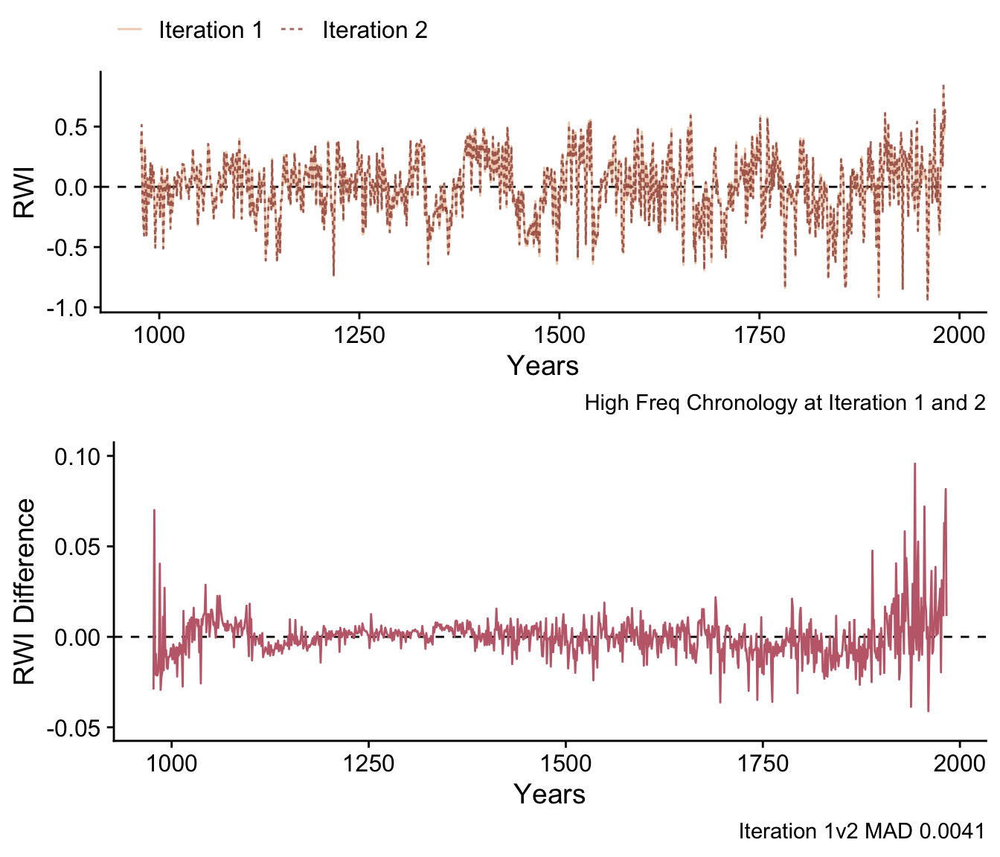

Chapter 5 Simple Signal-Free
5.1 Introduction
This is an initial draft that demonstrates how to build a simple signal-free chronology using the ssf function. Although this function is used to build chronologies, it is sufficiently different in its philosophy that it warrants its own chapter.
In most regards the ssf function follows the procedures laid out by Melvin and Briffa’s classic 2008 paper in Dendrochronologia (Melvin & Briffa, 2008). This is not a treatise on the pros and cons of the signal-free approach but attempts to demonstrate how the ssf function in can be applied to ring-width data. This particular implementation of the signal-free approach is quite limited in its scope and users who want more control and options (such as RCS) should look to the CRUST program detailed in Melvin and Briffa Melvin & Briffa (2014b) available on GitHub.
5.3 Data
We will demonstrate ssf with Bristlecone pine ring widths from Campito Mountain which is included with dplR.
## [1] "rwl" "data.frame"Note the class of the object which is rwl. This means, simply, that the data are in a format that dplR understands. It has series in columns and years stored as rownames. Objects of class rwl can be summarized, plotted, used for detrending and so on.
Before we continue we will truncate the the sample depth to a minimum of five series. There is nothing magic about the sample depth but having five series is usually sufficient for having a robust chronology.
We will now grab a few variables that will come in handy during this vigentte although they aren’t needed for a simple run of ssf.
yrs <- time(datTrunc)
medianSegLength <- floor(median(rwl.stats(datTrunc)$year))
sampDepth <- rowSums(!is.na(datTrunc))
normalizedSampleDepth <- sqrt(sampDepth-1)/sqrt(max(sampDepth-1))We will also set up some color palettes to use in plotting.
# get some color palettes from Jake L's PNWColors
seriesColors <- pnw_palette(name="Starfish",n=dim(datTrunc)[2])
divColors <- pnw_palette("Moth",5)Throughout this document, we will make use of both tidyverse syntax and do much of the plotting in ggplot. E.g., here is a plot of all the ring widths that we will use.
rawRW <- data.frame(yrs = yrs, datTrunc) %>%
pivot_longer(!yrs,names_to = "series", values_to = "msmt")
ggplot(data=rawRW,mapping = aes(x=yrs,y=msmt,color=series)) +
geom_line(alpha=0.5) +
scale_color_manual(values = seriesColors) +
labs(y="mm",x="Years",caption = "Raw Measurements") +
theme_cowplot() +
theme(legend.position = "none")## Warning: Removed 11868 rows containing missing values (`geom_line()`).
NB ggplot is issuing a warning above telling us that there are quite a few NA values in the data. That is nothing to worry about – it is merely saying that the series have different start and end dates.
5.4 Making the Simple Signal-Free Chronology
Now we create the simple signal-free chronology. In its most direct use, the ssf function outputs a crn object that has a simple onboard plotting method (crn.plot) which we will show rather than make a ggplot of the same data. Don’t worry, there is plenty of fancy plotting below.
## Data read. First iteration done.
## Iteration: 2 Median Abs Diff: 0.00415 (12.05102% of threshold)
## Iteration: 3 Median Abs Diff: 0.00217 (23.0808% of threshold)
## Iteration: 4 Median Abs Diff: 0.00291 (17.19139% of threshold)
## Iteration: 5 Median Abs Diff: 0.00133 (37.67632% of threshold)
## Iteration: 6 Median Abs Diff: 0.001 (50.01761% of threshold)
## Iteration: 7 Median Abs Diff: 0.00076 (66.13473% of threshold)
## Iteration: 8 Median Abs Diff: 0.00066 (75.66402% of threshold)
## Iteration: 9 Median Abs Diff: 0.00055 (91.4003% of threshold)
## Iteration: 10 Median Abs Diff: 0.00047 (105.4908% of threshold)
## Simple Signal Free Chronology Complete
## ssf was called with these arguments
## Detrending method: AgeDepSpline
## nyrs:
## pos.slope: FALSE
## maxIterations: 25
## madThreshold: 5e-04## Classes 'crn' and 'data.frame': 1007 obs. of 2 variables:
## $ sfc : num 1.219 1.487 0.836 0.664 0.57 ...
## $ samp.depth: num 5 5 5 5 5 5 5 5 5 5 ...plot(ssfCrn,add.spline=TRUE,nyrs=50,
crn.line.col=divColors[3],spline.line.col=divColors[1],
crn.lwd=1.5,spline.lwd=2)
In the above, the signal-free chronology is shown with a 50-year smoothing spline added for visualization of low-frequency variability. The algorithm converged after 10 iterations.
5.5 Changing the Detrending Method
The help file for ssf gives more information on possible arguments. See ?ssf for details. By default the function uses an age-depended spline (dplR function ads) for detrending. But we can also use a cubic smoothing spline (caps). We will arbitrarily set the stiffness to the median segment length of the input data, which is 627. Whether this is a wise choice or not is debatable.
## Data read. First iteration done.
## Iteration: 2 Median Abs Diff: 0.00212 (23.57048% of threshold)
## Iteration: 3 Median Abs Diff: 0.00185 (26.97214% of threshold)
## Iteration: 4 Median Abs Diff: 0.0017 (29.3594% of threshold)
## Iteration: 5 Median Abs Diff: 0.00153 (32.62844% of threshold)
## Iteration: 6 Median Abs Diff: 0.00144 (34.64722% of threshold)
## Iteration: 7 Median Abs Diff: 0.00138 (36.31909% of threshold)
## Iteration: 8 Median Abs Diff: 0.00125 (39.92379% of threshold)
## Iteration: 9 Median Abs Diff: 0.00121 (41.24506% of threshold)
## Iteration: 10 Median Abs Diff: 0.00114 (43.97276% of threshold)
## Iteration: 11 Median Abs Diff: 0.00106 (47.16853% of threshold)
## Iteration: 12 Median Abs Diff: 0.00103 (48.49743% of threshold)
## Iteration: 13 Median Abs Diff: 0.00098 (50.95603% of threshold)
## Iteration: 14 Median Abs Diff: 0.00095 (52.74914% of threshold)
## Iteration: 15 Median Abs Diff: 0.00089 (55.93075% of threshold)
## Iteration: 16 Median Abs Diff: 0.00086 (58.06452% of threshold)
## Iteration: 17 Median Abs Diff: 0.00081 (61.74206% of threshold)
## Iteration: 18 Median Abs Diff: 0.00074 (67.718% of threshold)
## Iteration: 19 Median Abs Diff: 0.00067 (74.47746% of threshold)
## Iteration: 20 Median Abs Diff: 0.00064 (77.98195% of threshold)
## Iteration: 21 Median Abs Diff: 6e-04 (82.93416% of threshold)
## Iteration: 22 Median Abs Diff: 0.00057 (88.15344% of threshold)
## Iteration: 23 Median Abs Diff: 0.00053 (94.85591% of threshold)
## Iteration: 24 Median Abs Diff: 0.00048 (104.0267% of threshold)
## Simple Signal Free Chronology Complete
## ssf was called with these arguments
## Detrending method: Spline
## nyrs: 627
## maxIterations: 25
## madThreshold: 5e-04plot(ssfCrn2,add.spline=TRUE,nyrs=50,
crn.line.col=divColors[3],spline.line.col=divColors[1],
crn.lwd=1.5,spline.lwd=2)
Note that the algorithm takes more iterations to converge but produces a qualitatively similar chronology.
5.6 Walk Through
To demonstrate how the signal free process works we can redo the chronology, this time returning information on the process at each iteration. Note the change in the structure (str) of the output object.
## Classes 'crn' and 'data.frame': 0 obs. of 11 variables:
## $ infoList :List of 5
## ..$ method : chr "AgeDepSpline"
## ..$ nyrs : NULL
## ..$ pos.slope : logi FALSE
## ..$ maxIterations: num 25
## ..$ madThreshold : num 5e-04
## $ iter0Crn :Classes 'crn' and 'data.frame': 1007 obs. of 2 variables:
## ..$ std : num 1.288 1.557 0.884 0.703 0.6 ...
## ..$ samp.depth: num 5 5 5 5 5 5 5 5 5 5 ...
## $ ssfCrn :Classes 'crn' and 'data.frame': 1007 obs. of 2 variables:
## ..$ sfc : num 1.219 1.487 0.836 0.664 0.57 ...
## ..$ samp.depth: num 5 5 5 5 5 5 5 5 5 5 ...
## $ sfRW_Array : num [1:1007, 1:34, 1:10] NA NA NA NA NA NA NA NA NA NA ...
## $ sfRWRescaled_Array : num [1:1007, 1:34, 1:10] NA NA NA NA NA NA NA NA NA NA ...
## $ sfRWRescaledCurves_Array: num [1:1007, 1:34, 1:10] NA NA NA NA NA NA NA NA NA NA ...
## $ sfRWI_Array : num [1:1007, 1:34, 1:10] NA NA NA NA NA NA NA NA NA NA ...
## $ sfCrn_Mat : num [1:1007, 1:10] 1.264 1.394 0.849 0.666 0.568 ...
## $ hfCrn_Mat : num [1:1007, 1:25] 0.313 0.443 -0.102 -0.285 -0.383 ...
## $ hfCrnResids_Mat : num [1:1007, 1:9] -0.02912 0.07009 -0.02075 -0.00941 -0.02138 ...
## $ MAD_Vec : num 0.00415 0.00217 0.00291 0.00133 0.001 ...
## - attr(*, "comment")= chr "ssfLong"The ssfCrn object is now a list with information on all the iterations that algorithm has run through. We can save these to their own objects for easier access.
sfRW_Array <- ssfCrn$sfRW_Array
sfRWRescaled_Array <- ssfCrn$sfRWRescaled_Array
sfRWRescaledCurves_Array <- ssfCrn$sfRWRescaledCurves_Array
sfRWI_Array <- ssfCrn$sfRWI_Array
sfCrn_Mat <- ssfCrn$sfCrn_Mat
hfCrn_Mat <- ssfCrn$hfCrn_Mat
hfCrnResids_Mat <- ssfCrn$hfCrnResids_Mat
MAD_Vec <- ssfCrn$MAD_Vec5.6.1 Step 1 (Iteration 0)
This is the initial, naive chronology at iteration zero.
plot(ssfCrn$iter0Crn,add.spline=TRUE,nyrs=50,
crn.line.col=divColors[4],spline.line.col=divColors[2],
crn.lwd=1.5,spline.lwd=2)
We use this as a starting point and begin the iterations.
5.6.2 Steps 2 and 3 (Iteration 1)
The algorithm first creates signal-free measurements for each series. At the first iteration these are the measurements divided by the initial chronology.
These signal-free measurements are output in sfRW_Array which is an array of years by series, by iteration. The signal-free measurements are then rescaled to have the original mean of each series.
sfRWRescaled <- data.frame(yrs = yrs, sfRWRescaled_Array[,,1]) %>%
pivot_longer(!yrs,names_to = "series", values_to = "msmt")
ggplot(data=sfRWRescaled,mapping = aes(x=yrs,y=msmt,color=series)) +
geom_line(alpha=0.75) +
scale_color_manual(values = seriesColors) +
labs(caption="Rescaled Signal Free Measurements at Iteration 1",
y="mm", x="Years") +
theme_cowplot() +
theme(legend.position = "none")## Warning: Removed 11868 rows containing missing values (`geom_line()`).
5.6.3 Steps 4 and 5 (Iteration 1)
In these steps the algorithm first looks for any places in the rescaled ring width array that have a sample depth of one and replaces the individual signal-free measurements values with the original measurement values. Then the curve fitting is repeated giving the detrending curves for iteration one.
sfRWRescaledCurves <- data.frame(yrs = yrs, sfRWRescaledCurves_Array[,,1]) %>%
pivot_longer(!yrs,names_to = "series", values_to = "msmt")
ggplot(data=sfRWRescaledCurves,mapping = aes(x=yrs,y=msmt,color=series)) +
geom_line(alpha=0.75,size=1) +
scale_color_manual(values = seriesColors) +
labs(caption="Detrending Curves at Iteration 1",
y="mm",x="Years") +
theme_cowplot() +
theme(legend.position = "none")## Warning: Using `size` aesthetic for lines was deprecated in ggplot2 3.4.0.
## ℹ Please use `linewidth` instead.
## This warning is displayed once every 8 hours.
## Call `lifecycle::last_lifecycle_warnings()` to see where this warning was
## generated.## Warning: Removed 11868 rows containing missing values (`geom_line()`).
5.6.4 Step 6 and 7 (Iteration 1)
With the detrending curves above, we make the first signal-free ring-width indices by dividing the original measurements by the curves above.
sfRWI <- data.frame(yrs = yrs, sfRWI_Array[,,1]) %>%
pivot_longer(!yrs,names_to = "series", values_to = "msmt")
ggplot(data=sfRWI,mapping = aes(x=yrs,y=msmt,color=series)) +
geom_line(alpha=0.5) +
geom_hline(yintercept = 1,linetype="dashed") +
scale_color_manual(values = seriesColors) +
labs(caption="Signal Free Indices at Iteration 1",
y="RWI",
x="Years") +
theme_cowplot() +
theme(legend.position = "none")## Warning: Removed 11868 rows containing missing values (`geom_line()`).
With these ring width indices we can make the signal-free chronology for the first iteration which we will plot with a 50-year smoothing spline.
sfCrn <- data.frame(yrs = yrs,
msmt = sfCrn_Mat[,1],
msmstSm= caps(sfCrn_Mat[,1],nyrs = 50)) %>%
pivot_longer(!yrs,names_to = "series", values_to = "msmt")
ggplot(data=sfCrn,mapping = aes(x=yrs,y=msmt,
color=series,
size=series,
alpha=series)) +
geom_hline(yintercept = 1,linetype="dashed") +
geom_line() +
scale_color_manual(values = divColors[c(3,3)]) +
scale_size_manual(values = c(1,0.5)) +
scale_alpha_manual(values = c(1,0.5)) +
labs(caption="Signal Free Chronology at Iteration 1",
y="RWI",x="Years") +
theme_cowplot() +
theme(legend.position = "none")
5.6.5 Step 8 (Begin Iterations)
Now we begin iterating through the steps above until the stopping criteria is met or until the maximum number of iterations is reached. Here we show how the chronology changes from iteration one to iteration two and how the high-pass filtering is used to calculate the median absolute difference (MAD) used as the stopping criteria.
sfCrn <- data.frame(yrs = yrs, msmt = sfCrn_Mat[,1:2]) %>%
rename(`Iteration 1` = 2,`Iteration 2` = 3) %>%
pivot_longer(!yrs,names_to = "Iteration", values_to = "msmt")
p1 <- ggplot(data=sfCrn,
mapping = aes(x=yrs,y=msmt,color=Iteration,
linetype=Iteration,
alpha=Iteration)) +
geom_hline(yintercept = 1,linetype="dashed") +
geom_line() +
scale_color_manual(values = divColors[c(4,2)]) +
scale_alpha_manual(values = c(0.75,0.75)) +
labs(caption ="Signal Free Chronology at Iteration 1 and 2",
y="RWI",x="Years") +
lims(y=c(0,3)) +
theme_cowplot() +
guides(colour = guide_legend(nrow = 1)) +
theme(legend.position=c(.1,.1),legend.title = element_blank())
sfCrnCompare <- data.frame(sfCrn_Mat[,1:2])
p2 <- ggplot(data=sfCrnCompare, mapping = aes(x=X1,y=X2)) +
geom_point(alpha=0.5,color=divColors[3]) +
geom_abline(slope=1,intercept = 0, linetype="dashed") +
labs(y=element_blank(), x= element_blank()) +
coord_equal() + theme_cowplot() +
theme(axis.text.x = element_blank(),
axis.text.y = element_blank())
p2 <- ggMarginal(p2, type="boxplot", size=6,
xparams = list(fill = divColors[4],
color = "grey30"),
yparams = list(fill = divColors[2],
color = "grey30"))
ggdraw(p1) +
draw_plot(plot = p2,
x = .05, y = .5,
width = .5, height = .5)
These chronologies are quite similar but differ at higher RWI values.
The median absolute error between these two chronologies is calculated on the high frequency component which is calculated using a cubic smoothing spline with stiffness set to the median segment length.
highFreqCrn <- data.frame(yrs = yrs,
highFreqIter1 = hfCrn_Mat[,1],
highFreqIter2 = hfCrn_Mat[,2]) %>%
rename(`Iteration 1` = 2,`Iteration 2` = 3) %>%
pivot_longer(!yrs,names_to = "Iteration",
values_to = "msmt")
# plot the high freq chrons
p1 <- ggplot(data=highFreqCrn,
mapping = aes(x=yrs,y=msmt,color=Iteration,
linetype=Iteration,
alpha=Iteration)) +
geom_hline(yintercept = 0,linetype="dashed") +
geom_line() +
scale_color_manual(values = divColors[c(4,2)]) +
scale_alpha_manual(values = c(0.75,0.75)) +
labs(caption="High Freq Chronology at Iteration 1 and 2",
y="RWI",x="Years") +
theme_cowplot() +
theme(legend.position = "top",legend.title = element_blank())
# plot the high freq chron difference (stored in hfCrnResids_Mat)
highFreqDiff <- data.frame(yrs=yrs,
difference = hfCrnResids_Mat[,1])
p2 <- ggplot(highFreqDiff,aes(x=yrs,y=difference)) +
geom_hline(yintercept = 0,linetype="dashed") +
geom_line(color=divColors[3]) +
labs(y="RWI Difference",x="Years",
caption=paste0("Iteration 1v2 MAD ", round(MAD_Vec[1],4))) +
lims(y=c(-0.05,0.1)) +
theme_cowplot() +
theme(legend.position = "none",
legend.title = element_blank())
plot_grid(p1, p2,nrow = 2)
In the lower plot it’s clear that the difference in the chronologies is highest at the start and end. We calculate the median absolute difference using the normalized sample depth as:
## [1] 0.004149028This is also returned in MAD_Vec.
Since this value is greater than the the stopping criteria of 5e-04, the algorithm continues to iterate until the difference is below the threshold or the maximum number of iterations is reached. Here is the difference plot between iterations nine and ten.
highFreqDiff <- data.frame(yrs=yrs,
difference = hfCrnResids_Mat[,9])
ggplot(highFreqDiff,aes(x=yrs,y=difference)) +
geom_hline(yintercept = 0,linetype="dashed") +
geom_line(color=divColors[3]) +
labs(y="RWI Difference",x="Years",
caption=paste0("Iteration 9v10 MAD ", round(MAD_Vec[9],4))) +
lims(y=c(-0.05,0.1)) +
theme_cowplot() +
theme(legend.position = "none",
legend.title = element_blank())
5.6.6 Iterations Visualized
We can see the progression of the output chronology relatively clearly by plotting the 50-year smoothing spline of the final chronology for each iteration.
crnCols <- pnw_palette(name="Starfish",n=dim(sfCrn_Mat)[2])
# smooth chrons
sfCrnSm <- data.frame(yrs = yrs,
msmt = apply(sfCrn_Mat,2,caps,nyrs=50)) %>%
pivot_longer(!yrs,names_to = "Iteration", values_to = "msmt")
p1 <- ggplot() +
geom_hline(yintercept = 1,linetype="dashed") +
geom_line(data=sfCrnSm,
mapping = aes(x=yrs,y=msmt,color=factor(Iteration)),
alpha=0.75,size=1) +
scale_color_manual(values = crnCols) +
labs(caption="Signal Free Chronology",
x="Years",y="RWI") +
theme_cowplot() +
theme(legend.position="none")
MADdf <- data.frame(Iteration = 2:dim(sfCrn_Mat)[2],
MAD = MAD_Vec)
p2 <- ggplot(MADdf, aes(x = Iteration,y = MAD,color=factor(Iteration))) +
geom_hline(yintercept = 5e-04,color="grey30",linetype="dotted") +
geom_line(color="grey30") +
geom_point(size=2,alpha=0.9) +
scale_color_manual(values = crnCols) +
scale_x_continuous(breaks=seq(2,max(MADdf$Iteration),by=2),
limits = c(1,max(MADdf$Iteration)+1),
expand = c(0,0)) +
scale_y_continuous(limits = c(0,max(MADdf$MAD))) +
theme_cowplot() +
theme(legend.position = "none",
plot.background = element_rect(fill = "gray95"))
ggdraw(p1) +
draw_plot(plot = p2,
x = .15, y = .6,
width = .4, height = .4)
We can also use the gganimate package to combine some of these elements in a way that allows us to see the progression of the chronology through the fitting process.
library(gganimate)
library(magick)
if(!file.exists("sfAnim.gif")){
# raw data
sfCrn <- data.frame(yrs = yrs,
msmt = sfCrn_Mat) %>%
rename_with(.fn = seq, .cols = -1) %>%
pivot_longer(!yrs,names_to = "Iteration", values_to = "msmt") %>%
mutate(Iteration = as.numeric(Iteration)) %>%
mutate(Iteration2 = str_pad(as.character(Iteration),width=2,pad="0"))
# smooth data
sfCrnSm <- data.frame(yrs = yrs,
msmtsm = apply(sfCrn_Mat,2,caps,nyrs=50)) %>%
rename_with(.fn = seq, .cols = -1) %>%
pivot_longer(!yrs,names_to = "Iteration", values_to = "msmt") %>%
mutate(Iteration = as.numeric(Iteration)) %>%
mutate(Iteration2 = str_pad(as.character(Iteration),width=2,pad="0"))
# MAD data
MADdf <- data.frame(Iteration = 1:dim(sfCrn_Mat)[2],
IterationStatic = 1:dim(sfCrn_Mat)[2],
MAD = c(NA,MAD_Vec)) %>%
mutate(Iteration2 = str_pad(as.character(Iteration),width=2,pad="0"))
# hf diff data
# diff data have to add a column of zeros for iter 1
highFreqDiff <- data.frame(yrs=yrs,
difference = cbind(0,hfCrnResids_Mat)) %>%
rename_with(.fn = seq, .cols = -1) %>%
pivot_longer(!yrs,names_to = "Iteration", values_to = "difference") %>%
mutate(Iteration = as.numeric(Iteration)) %>%
mutate(Iteration2 = str_pad(as.character(Iteration),width=2,pad="0"))
# crn plot
p1 <- ggplot() +
# layer 1
geom_hline(yintercept = 1,linetype="dashed") +
# layer 2
geom_line(data=sfCrn,mapping = aes(x=yrs,y=msmt,color=Iteration2),
alpha=0.25) +
# layer 3
geom_line(data=sfCrnSm,mapping = aes(x=yrs,y=msmt,color=Iteration2),
alpha=0.75,size=1) +
scale_color_manual(values = crnCols) +
labs(x="Years", y="RWI",
caption="Signal Free Chronology",
subtitle = "Iteration: {as.integer(frame_time)}") +
theme_cowplot() +
theme(legend.position="none")
# mad plot
p2 <- ggplot(MADdf, aes(x = IterationStatic,y = MAD)) +
#static
geom_hline(yintercept = 5e-04,color="grey30",linetype="dotted") +
geom_point(aes(color = factor(IterationStatic)),size=4,alpha=0.9) +
scale_color_manual(values = crnCols) +
# dynamic
# Direction of segment reversed below, less distracting
geom_line(color="grey30") +
geom_segment(aes(x = 1, xend = Iteration, yend = MAD),
linetype = 2, colour = 'gray50') +
geom_point(aes(x=Iteration),size=3,color="grey30",alpha=0.5) +
scale_x_continuous(breaks=seq(2,max(MADdf$Iteration),by=2),
limits = c(1,max(MADdf$Iteration)+1),
expand = c(0,0)) +
scale_y_continuous(limits = c(0,max(MADdf$MAD))) +
coord_cartesian(clip = 'off') +
labs(x="Iteration", y = "MAD",
caption="",
subtitle = "") +
theme_cowplot() +
theme(legend.position = "none")
# dif plot
p3 <- ggplot(highFreqDiff,aes(x=yrs,y=difference)) +
geom_hline(yintercept = 0,linetype="dashed") +
geom_line(aes(color=factor(Iteration))) +
scale_color_manual(values = crnCols) +
labs(y="RWI Difference",x="Years",
caption="") +
lims(y=c(-0.05,0.1)) +
theme_cowplot() +
theme(legend.position = "none",
legend.title = element_blank())
## do the animations and write the final gif
a1 <- p1 + transition_time(Iteration) +
shadow_mark(exclude_layer = 2) +
enter_fade()
a1_gif <- animate(a1, nframes = 100, duration = 10,
width = 6, height = 3, units = "in", res = 200,
renderer = magick_renderer())
a2 <- p2 + transition_reveal(Iteration)
a2_gif <- animate(a2, nframes = 100, duration = 10,
width = 3, height = 3, units = "in", res = 200,
renderer = magick_renderer())
a3 <- p3 + transition_time(Iteration) +
enter_fade() +
exit_fade()
a3_gif <- animate(a3, nframes = 100, duration = 10,
width = 6, height = 3, units = "in", res = 200,
renderer = magick_renderer())
combined_gif <- image_montage(c(a1_gif[1],a2_gif[1],a3_gif[1]),
tile = "2x2",
geometry_size_percent(100,100))
for(i in 2:100){ # nframe
tmp <- image_montage(c(a1_gif[i],a2_gif[i],a3_gif[i]),
tile = "2x2",
geometry_size_percent(100,100))
combined_gif <- c(combined_gif,tmp)
}
image_write(image = combined_gif,format = "gif",path = "sfAnim.gif")
}
knitr::include_graphics("sfAnim.gif")
One thing to note with these data is that the upturns and downturns at the ends of the chronology are persistent even though they shrink vastly in the later iterations.
5.7 Final Thoughts
This document shows how the algorithm progresses through the iterations in order to calculate the simple signal-free chronology. We should caution here that while there are excellent theoretical reasons to use the signal-free approach, the method is not a panacea for all applications. Detrending, after all, is a dark art and it is always up to the user to carefully evaluate the data and build chronologies with expectation that the final product is heavily dependent on the site and on the methods used.